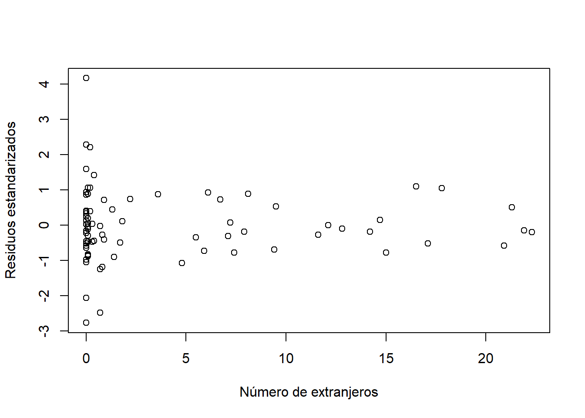

Parte 10 Análisis de regresión múltiple - Sesión 06
Cargamos los paquetes necesarios y los datos del archivo institutoschicago.sav
data <- read_spss("http://download.tesigandia.com/tmim/institutoschicago.sav")10.1 Análisis de correlación
Calculamos la matriz de correlaciones para validar la linealidad d ela relación entre la variable dependiente y cualquiera de las independientes
rcorr(as.matrix(subset(data, select = c(selectivo, asistencia, rentabaja, extranjero, tamclase)))) selectivo asistencia rentabaja extranjero tamclase
selectivo 1.00 0.72 -0.71 -0.14 0.50
asistencia 0.72 1.00 -0.52 -0.01 0.59
rentabaja -0.71 -0.52 1.00 0.10 -0.43
extranjero -0.14 -0.01 0.10 1.00 0.07
tamclase 0.50 0.59 -0.43 0.07 1.00
n
selectivo asistencia rentabaja extranjero tamclase
selectivo 81 80 81 81 81
asistencia 80 81 81 81 81
rentabaja 81 81 82 82 82
extranjero 81 81 82 82 82
tamclase 81 81 82 82 82
P
selectivo asistencia rentabaja extranjero tamclase
selectivo 0.0000 0.0000 0.2062 0.0000
asistencia 0.0000 0.0000 0.9601 0.0000
rentabaja 0.0000 0.0000 0.3555 0.0000
extranjero 0.2062 0.9601 0.3555 0.5222
tamclase 0.0000 0.0000 0.0000 0.5222 pairs(subset(data, select = c(selectivo, asistencia, rentabaja, extranjero, tamclase)))10.2 Modelo de regresión
Mostramos el modelo de regresión lineal múltiple.
modelo1 <- lm(selectivo ~ asistencia + rentabaja + extranjero + tamclase, data = data)
summary(modelo1)
Call:
lm(formula = selectivo ~ asistencia + rentabaja + extranjero +
tamclase, data = data)
Residuals:
Porcentaje de aprobados en selectivo
Min 1Q Median 3Q Max
-34.845 -6.649 -1.301 6.234 52.897
Coefficients:
Estimate Std. Error t value Pr(>|t|)
(Intercept) -110.5677 37.5578 -2.944 0.00431 **
asistencia 2.2045 0.4106 5.370 0.000000851 ***
rentabaja -0.6517 0.1136 -5.739 0.000000190 ***
extranjero -0.2593 0.2300 -1.127 0.26316
tamclase 0.2119 0.4162 0.509 0.61222
---
Signif. codes: 0 '***' 0.001 '**' 0.01 '*' 0.05 '.' 0.1 ' ' 1
Residual standard error: 12.86 on 75 degrees of freedom
(2 observations deleted due to missingness)
Multiple R-squared: 0.6839, Adjusted R-squared: 0.6671
F-statistic: 40.57 on 4 and 75 DF, p-value: < 2.2e-1610.3 Distancia de De Cook
Se comprueba la existencia de outliers con el cálculo distancias.
de.cook <- cooks.distance(modelo1)
summary(de.cook) Min. 1st Qu. Median Mean 3rd Qu. Max.
0.00000043 0.00065550 0.00364650 0.01192072 0.01133593 0.09615295 10.4 Fiabilidad del modelo
Para que este modelo sea fiable debemos realizar un ANALISIS DE RESIDUOS
10.4.1 1: Los errores deben seguir una distribución normal
residuos <- rstandard(modelo1) # residuos estándares del modelo ajustado (completo)
hist(residuos) # histograma de los residuos estandarizados boxplot(residuos) # diagrama de cajas de los residuos estandarizados qqnorm(residuos) # gráfico de cuantiles de los residuos estandarizados residuosest <- rstudent(modelo1) # residuos estándares del modelo ajustado (completo)
hist(residuosest) # histograma de los residuos estandarizados boxplot(residuosest) # diagrama de cajas de los residuos estandarizados qqnorm(residuosest) # gráfico de cuantiles de los residuos estandarizados 10.4.2 2: La varianza de los errores es constante. Se hace el test de Goldfeld y Quandt.
gqtest(selectivo ~ asistencia + rentabaja + extranjero + tamclase, data = data)
Goldfeld-Quandt test
data: selectivo ~ asistencia + rentabaja + extranjero + tamclase
GQ = 0.051197, df1 = 35, df2 = 35, p-value = 1
alternative hypothesis: variance increases from segment 1 to 2plot(fitted.values(modelo1),rstandard(modelo1), xlab="Valores ajustados", ylab="Residuos estandarizados")
abline(h=0) # dibuja la recta en ceroplot(fitted.values(modelo1),rstudent(modelo1), xlab="Valores ajustados", ylab="Residuos estudentizados")
abline(h=0) # dibuja la recta en cero10.4.3 3: La independencia de los errores
plot(modelo1[["model"]][["asistencia"]], rstandard(modelo1), xlab = "Asistencia a clase", ylab = "Residuos estandarizados")plot(modelo1[["model"]][["rentabaja"]], rstandard(modelo1), xlab = "Renta baja", ylab = "Residuos estandarizados")plot(modelo1[["model"]][["extranjero"]], rstandard(modelo1), xlab = "Número de extranjeros", ylab = "Residuos estandarizados")
plot(modelo1[["model"]][["tamclase"]], rstandard(modelo1), xlab = "Tamaño medio de la clase", ylab = "Residuos estandarizados")
plot(modelo1[["model"]][["asistencia"]], rstudent(modelo1), xlab = "Asistencia a clase", ylab = "Residuos estudentizados")plot(modelo1[["model"]][["rentabaja"]], rstudent(modelo1), xlab = "Renta baja", ylab = "Residuos estudentizados")plot(modelo1[["model"]][["extranjero"]], rstudent(modelo1), xlab = "Número de extranjeros", ylab = "Residuos estudentizados")plot(modelo1[["model"]][["tamclase"]], rstudent(modelo1), xlab = "Tamaño medio de la clase", ylab = "Residuos estudentizados")10.4.4 4: No auto correlación de los términos de error.
dwtest(selectivo ~ asistencia + rentabaja + extranjero + tamclase, data = data)
Durbin-Watson test
data: selectivo ~ asistencia + rentabaja + extranjero + tamclase
DW = 1.6611, p-value = 0.05996
alternative hypothesis: true autocorrelation is greater than 0